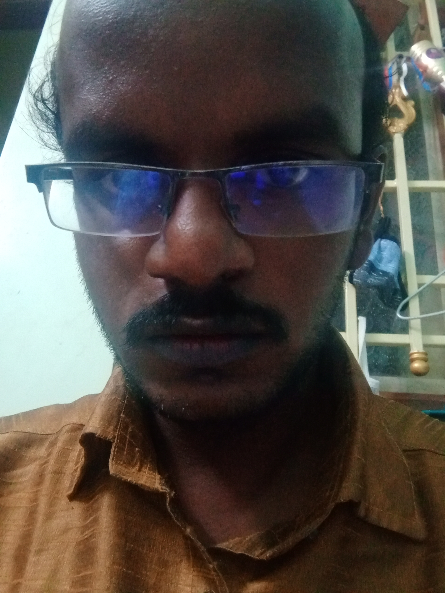

Hi there, Myself Sabari C
-> I’m a graduate of Saveetha Engineering College with a Bachelor’s degree in Computer Science Engineering. -> I’m a Computer Science Engineering graduate with a strong passion for technology. After completing a comprehensive software development course, I am excited to transition into a career in software development.Through my learning journey, I have gained hands-on experience in programming, debugging, testing, and building web applications using technologies like Java, JavaScript, HTML, CSS and Manual Testing.I am eager to apply my engineering mindset and newly acquired skills to develop innovative software solutions and contribute in a dynamic development environment. Passionate and self-motivated aspiring Software Tester with strong knowledge in Java and SQL. Actively involved in developing mini projects, practicing problem-solving, and learning software testing concepts. Regularly updating GitHub with projects and continuously improving technical skills.A dedicated and self-driven aspiring Software Testing professional with solid knowledge in Java and SQL. Experienced in building mini projects and practicing coding challenges to enhance logical thinking and debugging skills. Familiar with SDLC, STLC, and manual testing practices. Passionate about delivering quality software, learning new technologies, and growing in a dynamic IT environment.
Curricular Activities
As a Testing Engineer, I focus on ensuring software quality through strong domain knowledge and structured testing approaches. I have experience in end-to-end testing and API testing using tools like Postman to validate endpoints and ensure application reliability. I am confident in handling different types of applications and performing complete testing cycles independently. My experience has strengthened my skills in time management, problem-solving, debugging, collaboration, and adaptability in fast-paced environments. And then in the ways I am very much interested in the Technical Curricular Activities.Participated in technical seminars and coding workshops.Participated in technical seminars and coding workshops.